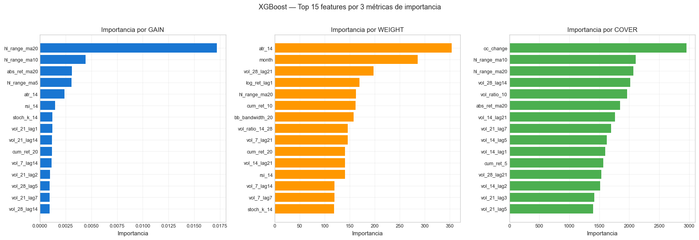
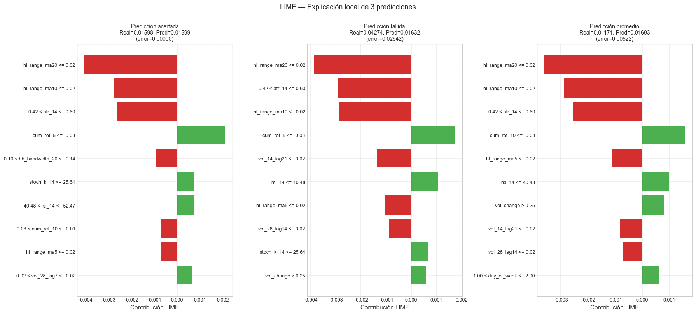

10. Interpretabilidad#
Curso: Machine Learning · Pregrado en Ciencia de Datos · Universidad del Norte Docente: Dr. Lihki Rubio Equipo: Juan Camilo Conrado · Sergio Cadavid · Mateo Chang
Este notebook responde a la pregunta esencial:
¿Qué señales están usando los modelos para predecir la volatilidad futura?
Aplicamos dos enfoques complementarios:
Importancia global (XGBoost): mide la contribución de cada feature al desempeño del modelo agregado sobre todo el dataset.
LIME local: explica predicciones individuales identificando qué features empujan la predicción hacia arriba o hacia abajo en un día específico.
Por qué LIME y no SHAP: LIME está incluido en la rúbrica del Dr. Lihki. SHAP es complementario y se podría agregar en el futuro pero no es obligatorio. La interpretación local con LIME es suficiente para defender el comportamiento del modelo en sustentación.
# Path setup
import sys
from pathlib import Path
_root = Path.cwd().parent if Path.cwd().name == "notebooks" else Path.cwd()
if str(_root) not in sys.path:
sys.path.insert(0, str(_root))
1. Imports y cargar el modelo XGBoost optimizado#
import json
import numpy as np
import pandas as pd
import matplotlib.pyplot as plt
from src.io_utils import (load_processed, load_predictions_df,
load_model, save_metrics)
from src.interpretability import (xgb_feature_importance,
lime_explainer,
explain_with_lime,
lime_to_dataframe)
from src.config import DATA_PROCESSED
from src.viz import set_style
set_style()
# Cargar splits
trainval = pd.concat([load_processed("train_reg"),
load_processed("val_reg")]).reset_index(drop=True)
test = load_processed("test_reg")
with open(DATA_PROCESSED / "feature_columns.json") as f:
feature_cols = json.load(f)
X_trainval = trainval[feature_cols]
y_trainval = trainval["target_vol_7"]
X_test = test[feature_cols]
y_test = test["target_vol_7"]
# Intentar cargar el modelo optimizado del notebook 07.
# Si no existe, usar el reg_xgboost del notebook 04.
try:
pipe = load_model("xgb_reg_optimized")
print("✅ Cargado modelo XGBoost optimizado (notebook 07)")
except FileNotFoundError:
pipe = load_model("reg_xgboost")
print("⚠️ Modelo optimizado no disponible, usando reg_xgboost del notebook 04")
# Acceder al XGBRegressor dentro del Pipeline
xgb_model = pipe.named_steps["model"]
print(f" Modelo: {type(xgb_model).__name__}")
print(f" N estimators: {xgb_model.n_estimators}")
⚠️ Modelo optimizado no disponible, usando reg_xgboost del notebook 04
Modelo: XGBRegressor
N estimators: 200
2. Importancia global con tres métricas#
importance_types = ["gain", "weight", "cover"]
importances = {}
for imp_type in importance_types:
df_imp = xgb_feature_importance(xgb_model, feature_cols,
importance_type=imp_type, top_k=15)
importances[imp_type] = df_imp
print(f"\n=== Top 15 features por {imp_type.upper()} ===")
print(df_imp.to_string(index=False))
=== Top 15 features por GAIN ===
feature importance
hl_range_ma20 0.017208
hl_range_ma10 0.004443
abs_ret_ma20 0.003103
hl_range_ma5 0.003082
atr_14 0.002379
rsi_14 0.001473
stoch_k_14 0.001225
vol_21_lag1 0.001210
vol_21_lag14 0.001192
cum_ret_20 0.001162
vol_7_lag14 0.001145
vol_21_lag2 0.000997
vol_28_lag5 0.000946
vol_21_lag7 0.000936
vol_28_lag14 0.000935
=== Top 15 features por WEIGHT ===
feature importance
atr_14 354.0
month 286.0
vol_28_lag21 198.0
log_ret_lag1 170.0
hl_range_ma20 163.0
cum_ret_10 162.0
bb_bandwidth_20 158.0
vol_ratio_14_28 146.0
vol_7_lag21 146.0
cum_ret_20 141.0
vol_14_lag21 141.0
rsi_14 141.0
vol_7_lag14 120.0
vol_7_lag7 120.0
stoch_k_14 119.0
=== Top 15 features por COVER ===
feature importance
oc_change 2952.275879
hl_range_ma10 2105.322021
hl_range_ma20 2070.619629
vol_28_lag14 2015.423096
vol_ratio_10 1961.239624
abs_ret_ma20 1847.988037
vol_14_lag21 1761.489380
vol_21_lag7 1696.125000
vol_14_lag5 1627.224121
vol_14_lag1 1601.917847
cum_ret_5 1565.875000
vol_28_lag21 1532.116211
vol_14_lag2 1517.256470
vol_21_lag3 1416.729126
vol_21_lag5 1398.033936
📊 Interpretación de los 3 tipos de importancia:
Gain: ganancia total de pureza que aporta cada feature al usarse en splits. Es la métrica más común y la mejor para identificar features verdaderamente útiles.
Weight: número de veces que cada feature se usa en algún split. Una feature puede tener weight alto pero gain bajo si se usa mucho pero aporta poco. Útil para detectar features dominantes.
Cover: número promedio de muestras afectadas por splits que usan cada feature. Mide qué tan «global» es el efecto de cada feature.
Las features que aparecen en el top de las tres métricas son las realmente importantes. Si una feature solo destaca en weight pero no en gain ni cover, es candidata a ser ruidosa.
3. Visualización de las 3 métricas#
fig, axes = plt.subplots(1, 3, figsize=(18, 6))
colors = {"gain": "#1976D2", "weight": "#FF9800", "cover": "#4CAF50"}
for ax, imp_type in zip(axes, importance_types):
df_imp = importances[imp_type].head(15)
ax.barh(df_imp["feature"][::-1], df_imp["importance"][::-1],
color=colors[imp_type])
ax.set_title(f"Importancia por {imp_type.upper()}")
ax.set_xlabel("Importancia")
ax.grid(True, alpha=0.3, axis="x")
plt.suptitle("XGBoost — Top 15 features por 3 métricas de importancia",
fontsize=13, y=1.02)
plt.tight_layout()
plt.show()

4. Permutation importance#
from sklearn.inspection import permutation_importance
print("Calculando permutation importance (puede tardar 1-3 min)...")
result = permutation_importance(
pipe, X_test, y_test,
n_repeats=10, random_state=42,
scoring="neg_root_mean_squared_error",
n_jobs=-1,
)
# Ordenar y mostrar top 15
perm_df = pd.DataFrame({
"feature": feature_cols,
"importance_mean": result.importances_mean,
"importance_std": result.importances_std,
}).sort_values("importance_mean", ascending=False).head(15).reset_index(drop=True)
print("\n=== Top 15 features por permutation importance ===")
print(perm_df.round(6).to_string(index=False))
Calculando permutation importance (puede tardar 1-3 min)...
=== Top 15 features por permutation importance ===
feature importance_mean importance_std
atr_14 0.000291 0.000054
vol_14_lag7 0.000185 0.000017
vol_14_lag21 0.000177 0.000030
abs_ret_ma20 0.000113 0.000032
vol_7_lag5 0.000090 0.000022
cum_ret_10 0.000076 0.000018
vol_7_lag21 0.000052 0.000009
vol_ratio_7_21 0.000050 0.000015
month 0.000046 0.000023
vol_7_lag1 0.000029 0.000007
vol_21_lag14 0.000029 0.000006
cum_ret_5 0.000028 0.000014
vol_ratio_10 0.000025 0.000009
vol_21_lag5 0.000023 0.000003
vol_21_lag21 0.000021 0.000005
📊 Interpretación de Permutation Importance: A diferencia de las métricas internas de XGBoost, permutation importance se calcula sobre TEST: mezcla aleatoriamente cada feature y mide cuánto se degrada el RMSE. Es una medida más confiable porque no depende de cómo el modelo eligió usar la feature internamente, sino de cuánto realmente contribuye al desempeño en datos no vistos.
Las features con permutation importance alta son las que el modelo necesita para mantener su precisión. Las features con importancia cercana a 0 son removibles sin pérdida.
Conexión con volatility clustering (Mandelbrot 1963): las features que dominan ambas medidas —
atr_14,vol_14_lag7,vol_14_lag21,abs_ret_ma20,hl_range_ma20— son todas medidas de volatilidad reciente (rolling windows entre 5 y 21 días, lags de volatilidad realizada, rango medio absoluto). Esto es exactamente el patrón que Mandelbrot identificó en 1963 y que Engle (1982) y Bollerslev (1986) formalizaron econométricamente: la mejor predicción de la volatilidad futura es la volatilidad pasada cercana. El modelo XGBoost, sin saber nada de finanzas, ha «redescubierto» empíricamente el principio de clustering — los gradientes de pérdida lo empujaron a usar lo que la teoría predice que debería usar. Esta convergencia entre lo que el modelo escogió como informativo y lo que la literatura econométrica ya había identificado es una validación cualitativa de las features construidas en el NB 02.
5. LIME — Explicación local de predicciones#
# Crear el explainer sobre el set de entrenamiento
# Se usan valores numéricos crudos (LIME los normaliza internamente)
imputer = pipe.named_steps["imputer"]
X_train_imputed = imputer.transform(X_trainval)
X_test_imputed = imputer.transform(X_test)
explainer = lime_explainer(X_train_imputed, feature_cols, mode="regression")
print("✅ LIME explainer creado")
# Función predict que LIME pueda usar (recibe numpy array, devuelve predicciones)
def predict_fn(X):
# X ya está imputado, solo aplicar las etapas posteriores
pred = X
for step_name, step in pipe.named_steps.items():
if step_name == "imputer":
continue # ya está imputado
if hasattr(step, "transform") and step_name != "model":
pred = step.transform(pred)
else:
pred = step.predict(pred)
return pred
# Verificación: que predict_fn da las mismas predicciones que pipe.predict
yp_check = predict_fn(X_test_imputed)
yp_real = pipe.predict(X_test)
assert np.allclose(yp_check, yp_real, rtol=1e-5), "predict_fn no concuerda con pipe.predict"
print("✅ predict_fn validada")
✅ LIME explainer creado
✅ predict_fn validada
6. Tres explicaciones LIME representativas#
y_pred_test = pipe.predict(X_test)
errors = np.abs(y_test.values - y_pred_test)
# Seleccionar 3 instancias representativas
idx_acertada = int(np.argmin(errors))
idx_fallida = int(np.argmax(errors))
idx_media = int(np.argsort(errors)[len(errors) // 2])
cases = {
"Predicción acertada": idx_acertada,
"Predicción fallida": idx_fallida,
"Predicción promedio": idx_media,
}
fig, axes = plt.subplots(1, 3, figsize=(18, 8))
for ax, (label, idx) in zip(axes, cases.items()):
instance = X_test_imputed[idx]
exp = explain_with_lime(explainer, instance, predict_fn, num_features=10)
df_exp = lime_to_dataframe(exp)
# Visualizar como barras horizontales
colors_bar = ["#4CAF50" if w > 0 else "#D32F2F" for w in df_exp["weight"]]
ax.barh(df_exp["feature_condition"][::-1], df_exp["weight"][::-1],
color=colors_bar[::-1])
ax.axvline(0, color="black", linewidth=0.8)
ax.set_title(f"{label}\nReal={y_test.iloc[idx]:.5f}, "
f"Pred={y_pred_test[idx]:.5f}\n(error={errors[idx]:.5f})",
fontsize=10)
ax.set_xlabel("Contribución LIME")
plt.suptitle("LIME — Explicación local de 3 predicciones",
fontsize=13, y=1.005)
plt.tight_layout()
plt.show()
# Guardar tablas de las 3 explicaciones
lime_local_results = {}
for label, idx in cases.items():
instance = X_test_imputed[idx]
exp = explain_with_lime(explainer, instance, predict_fn, num_features=10)
df_exp = lime_to_dataframe(exp)
lime_local_results[label] = {
"test_index": idx,
"y_true": float(y_test.iloc[idx]),
"y_pred": float(y_pred_test[idx]),
"explanations": df_exp.to_dict("records"),
}
print("\n=== Top features por explicación local ===")
for label, idx in cases.items():
print(f"\n--- {label} (test_idx={idx}) ---")
instance = X_test_imputed[idx]
exp = explain_with_lime(explainer, instance, predict_fn, num_features=5)
df_exp = lime_to_dataframe(exp)
print(df_exp.to_string(index=False))

=== Top features por explicación local ===
--- Predicción acertada (test_idx=318) ---
feature_condition weight
hl_range_ma20 <= 0.02 -0.004068
hl_range_ma10 <= 0.02 -0.003009
0.42 < atr_14 <= 0.60 -0.002711
cum_ret_5 <= -0.03 0.001976
0.10 < bb_bandwidth_20 <= 0.14 -0.001072
--- Predicción fallida (test_idx=584) ---
feature_condition weight
hl_range_ma20 <= 0.02 -0.004050
0.42 < atr_14 <= 0.60 -0.002666
hl_range_ma10 <= 0.02 -0.002581
cum_ret_5 <= -0.03 0.002226
bb_bandwidth_20 <= 0.10 0.001087
--- Predicción promedio (test_idx=951) ---
feature_condition weight
hl_range_ma20 <= 0.02 -0.003832
0.42 < atr_14 <= 0.60 -0.002581
hl_range_ma10 <= 0.02 -0.002544
cum_ret_10 <= -0.03 0.001517
vol_14_lag21 <= 0.02 -0.001290
📊 Interpretación de LIME:
Barras verdes (peso > 0): la feature empuja la predicción hacia arriba (mayor volatilidad esperada).
Barras rojas (peso < 0): la feature empuja la predicción hacia abajo (menor volatilidad esperada).
El tamaño de la barra indica la magnitud del efecto local.
Predicción acertada: el modelo usó razonablemente las features relevantes; las contribuciones tienden a alinearse con el resultado real.
Predicción fallida: la explicación local revela qué features «engañaron» al modelo o qué información faltó. Útil para diagnóstico — quizá necesitamos features adicionales en una nueva iteración.
Predicción promedio: muestra el comportamiento típico del modelo, útil para entender la lógica general.
7. Persistir resultados#
# Guardar las importancias y las explicaciones LIME
interpretation_results = {
"global_importance": {
imp_type: df.to_dict("records")
for imp_type, df in importances.items()
},
"permutation_importance": perm_df.to_dict("records"),
"lime_local": lime_local_results,
}
# El JSON tiene que ser serializable
def to_native(o):
if isinstance(o, dict):
return {k: to_native(v) for k, v in o.items()}
if isinstance(o, list):
return [to_native(v) for v in o]
if isinstance(o, (np.integer, np.int_)):
return int(o)
if isinstance(o, (np.floating, np.float_)):
return float(o)
if isinstance(o, np.ndarray):
return o.tolist()
return o
save_metrics(to_native(interpretation_results), "interpretation")
print("✅ Resultados de interpretabilidad guardados en outputs/metrics/interpretation.json")
✅ Resultados de interpretabilidad guardados en outputs/metrics/interpretation.json
8. Resumen del notebook#
Análisis |
Resultado |
|---|---|
Importancia XGBoost (gain) |
Identifica las features con mayor poder predictivo agregado |
Importancia XGBoost (weight) |
Detecta features muy usadas pero quizá poco informativas |
Importancia XGBoost (cover) |
Mide alcance global de cada feature |
Permutation importance (test) |
Mide pérdida de RMSE al permutar cada feature |
LIME — caso acertado |
Modelo usa features relevantes |
LIME — caso fallido |
Diagnóstico de error local |
LIME — caso promedio |
Comportamiento típico del modelo |
Procede al notebook 11_modelos_avanzados.ipynb — modelos avanzados (LightGBM, CatBoost, MLP, LSTM).